程序的机器级表示¶
在使用高级语言，如 C、Java 编程时，我们无法了解程序在机器级别的实现。而使用汇编语言编写程序时，程序员则只能引用低级指令。由高级语言编写的程序可以在多种不同的机器上编译运行，而汇编语言则与机器特性高度相关。
尽管编译器完成了生成汇编代码的大部分工作，但阅读和理解汇编语言对于程序员来说仍是一项重要的技能：
Those who say "I understand the general principles, I don't want to bother learning the details" are deluding themselves.
Intel 处理器历史¶
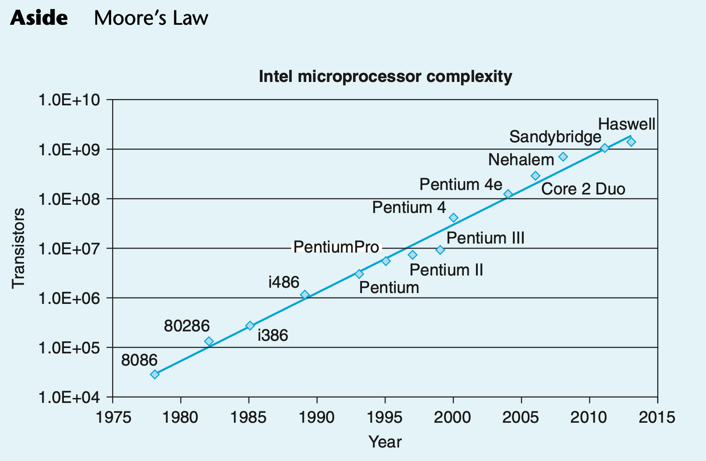
程序编码¶
机器级代码¶
机器级程序的格式和行为是由指令集架构（Instruction Set Architecture，ISA）定义的，它包括处理器状态、指令格式以及每条指令对状态的影响。大多数 ISA，包括 x86-64，都将程序的行为描述为每条指令按顺序执行，且一条指令在下一条指令开始之前完成。虽然处理器硬件可以同时执行许多指令，但它采用了安全措施以确保其整体行为与 ISA 规定的操作顺序相匹配。
汇编代码非常接近二进制格式的机器代码，但其文本格式更具可读性。一些对程序员隐藏的处理器状态在汇编代码中是可见的：
- 程序计数器（PC）：在 x86-64 中被称为 %rip，代表即将执行的下一条指令在存储器中的地址；
- 整数寄存器文件（Register File）：最多可以存储 64 位的地址（与 C 中的指针对应）或整数数据。一些寄存器用于记录程序状态的关键部分，而其他寄存器则用于保存临时数据，例如 过程 中的参数和局部变量以及函数返回值；
- 条件码寄存器（Condition Code Registers）：保存了最近一次执行的算术或逻辑指令的状态信息，用于实现控制流或数据流中条件的改变，例如 If 语句和 While 语句；
- 向量寄存器（Vector Registers）：每个都可以保存一个或多个整数或浮点数值。
虽然 C 提供了一个模型，让我们可以在内存中声明和分配不同数据类型的对象。但机器级代码只会简单地将内存视为一个按字节寻址的数组，因此 C 中的聚合数据类型（如数组和结构体）在机器级代码中会表示为连续的字节集合。甚至对于标量数据类型（如int、char、float和bool等），汇编代码也不会区分有符号和无符号整数、不同类型的指针以及指针和整数。
程序的可执行机器级代码、操作系统所需的一些信息、用于管理过程调用和返回的运行时栈以及用户请求的堆内存（如使用库函数malloc）共同构成了程序内存。它使用虚拟地址寻址，不过只有部分虚拟地址的范围有效。例如，x86-64 机器的虚拟地址必须将前 16 位设置为 0，因此其有效范围包含 \(2^{48}\) （64 TB）字节。
单个机器指令仅执行一些基本的操作，如将存储在寄存器中的两个数字相加、在内存和寄存器之间传输数据以及有条件地跳转到新的指令地址。编译器必须生成这样的指令序列来实现程序结构，例如算术表达式求值、循环或过程调用和返回。
代码示例¶
示例 C 程序文件mstore.c中包含如下代码：
使用gcc -Og -S mstore.c命令即可生成汇编代码文件mstore.s，其中的-Og代表对代码进行优化。汇编代码中有多种声明，包括：
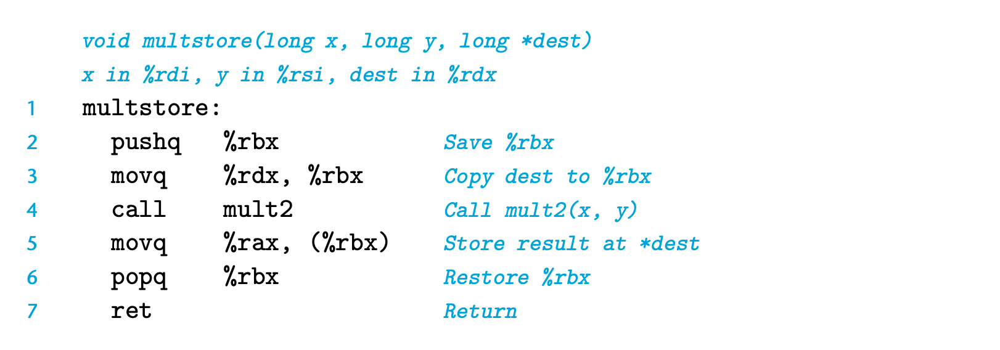
每一行缩进的代码都对应着一条机器指令，图中的蓝色注解则标示了指令的作用，如pushq代表将寄存器%rbx中的内容压入程序栈。原程序中局部变量名称以及数据类型的所有信息都已被删除，随后我们可以在 Linux 系统中执行下列命令：
第一条命令将生成二进制格式的目标代码文件mstore.o，第二条命令则是进行反汇编，即将机器级代码转换为一种与汇编语言格式类似的代码。图中的行号和斜体注释是为了方便说明加入的，左侧有 6 组十六进制字节序列，每个都是一条指令，右侧则显示了等效的汇编代码：
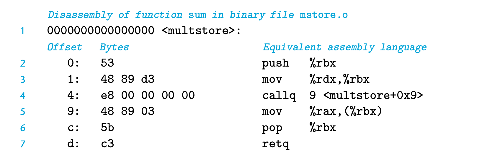
- x86-64 指令的长度范围为 1 到 15 个字节，常用的和 操作数 较少的指令比不太常用或操作数较多的指令需要更少的字节数；
- 从给定的起始位置开始，反汇编程序将字节唯一地解码为机器指令。例如，只有指令
pushq %rbx以字节值 53 开头； - 反汇编程序只是根据机器级代码文件中的字节序列来确定汇编代码，不需要访问源代码或汇编代码；
- 反汇编程序使用的指令命名规则与 GCC 生成的汇编代码略有不同，如许多指令中的后缀
q被省略了。这些后缀是尺寸指示符，在大多数情况下可以省略。而反汇编器在call和ret指令中添加了后缀q，它们同样是可以省略的。
想要生成实际的可执行代码还需要在一组包含main函数的目标代码文件上运行链接器（Linker），假设 main.c 文件如下：
那么通过gcc -Og -o prog main.c mstore.c命令生成的可执行文件prog的大小就超过了mstore.o，因为它还包含了用于启动和终止程序以及与操作系统交互的代码。同样对prog文件使用objdump命令进行反汇编，其输出结果包含如下代码：
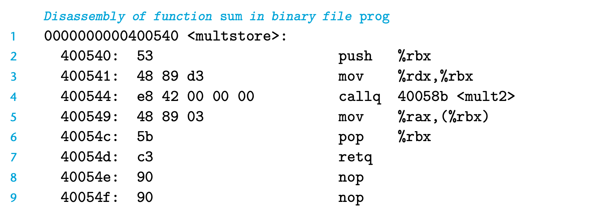
与第一次反汇编的结果相比，区别主要在：
- 链接器移动了代码的位置，因此图中左侧的地址不同；
- 链接器的一项任务是将函数调用与其可执行代码的位置进行匹配。在上图第 4 行，链接器填充了
callq指令在调用函数mult2时应该使用的地址； - 上图第 8，9 行填充的代码对结果没有任何影响，
nop意为“No Operation”。插入它们是为了将函数的代码增加到 16 字节，这样可以更好地放置下一个代码块，从而提升存储器的系统性能。
数据格式¶
Intel 用术语“字”（Word）来表示 16 位数据类型，因此 32 位数被称为“双字”（Double Words），64 位数被称为“四字”（Quad Words）。在 x86-64 机器上 C 的原始数据类型大小如下：
| C declaration | Intel data type | Assembly-code suffix | Size(bytes) |
|---|---|---|---|
| char | Byte | b | 1 |
| short | Word | w | 2 |
| int | Double word | l | 4 |
| long | Quad word | q | 8 |
| char * | Quad word | q | 8 |
| float | Single precision | s | 4 |
| double | Double precision | l | 8 |
大多数由 GCC 生成的汇编代码都有一个表示操作数大小的单字符后缀，如数据移动指令有四种变体：movb（移动字节）、movw（移动字）、movl（移动双字）和movq（移动四字）。值得一提是，后缀“l”即可以表示 4 字节整数又表示 8 字节双精度浮点数。这并不会引起歧义，因为涉及到浮点数的代码使用一组与整数完全不同的指令和寄存器。
访问信息¶
上文提到，x86-64 机器的 CPU 中包含 16 个通用的整数寄存器，均可以存储 64 位的整数或指针数据：
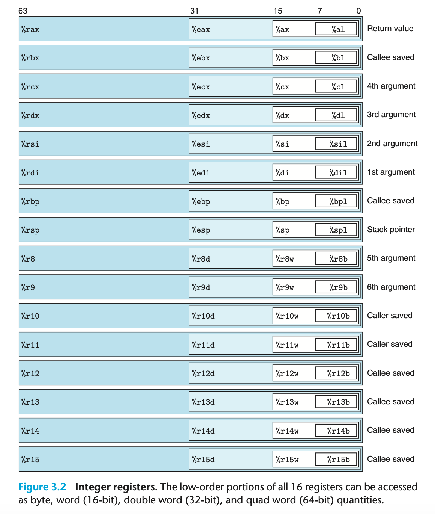
图中所有寄存器的名称均以 %r 开头，它们的演变顺序是从右往左的。前 8 个寄存器，即 %ax 到 %sp，是最初的 8086 机器使用的 8 个 16 位寄存器。随着 IA32 的出现，它们被扩展位 32 位，即 %eax 到 %esp。目前的 x86-64 机器将其进一步地扩展为 64 位，即 %rax 到 %rsp。同时还新添加了 8 个寄存器，即 %r8 到 %r15。图中右侧的注释说明了各个寄存器在典型程序中扮演的角色，其中最独特的是栈指针 %rsp，它用于指示运行时栈的结束位置。
指令可以对存储在寄存器低位字节中的不同大小的数据进行操作。字节级操作可以访问最低有效字节，16 位操作可以访问最低有效 2 个字节，32 位操作可以访问最低有效 4 个字节，64 位操作则可以访问整个寄存器。
操作数¶
大多数指令都有一个或多个操作数（Operand），指定了执行操作时使用的源数据和结果放置的位置。x86-64 机器支持的操作数格式如下：
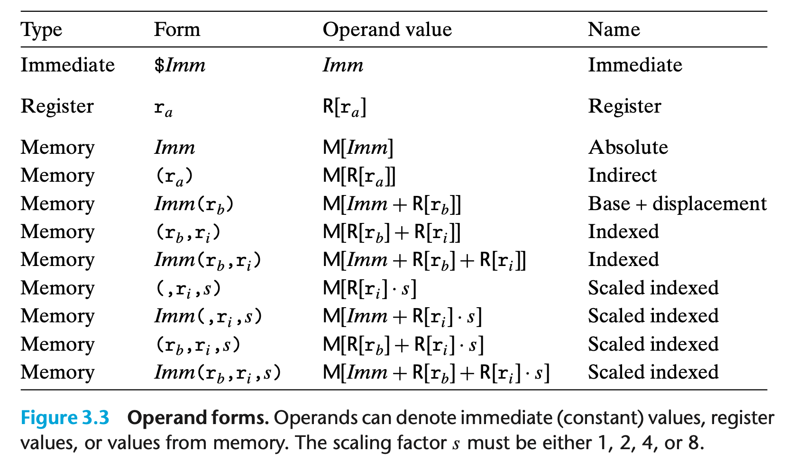
源数据既可以以常数形式给出，也可以从寄存器或内存中读取，结果则存储在寄存器或内存中。因此操作数有三种可能的类型：
- 立即数（Immediate）：即常数值，书写方式为 $ 符号后面跟一个整数；
- 寄存器（Register）：寄存器中的内容。我们使用 \(r_a\) 表示任意寄存器 \(a\)，使用 \(R[r_a]\) 来表示它的值；
- 内存（Memory）引用：根据计算出的地址（也称有效地址）来访问某个内存位置。使用 \(M_b[Addr]\) 表示在内存中从地址 \(Addr\) 开始 \(b\) 字节的引用，右下角标 \(b\) 可以省略。
最通用的内存引用方式在上表底部：\(M[Imm + R[r_b] + R[r_i]\times s]\)，常用于引用数组元素。
假设下列值存储在内存或寄存器中指定的地址处：
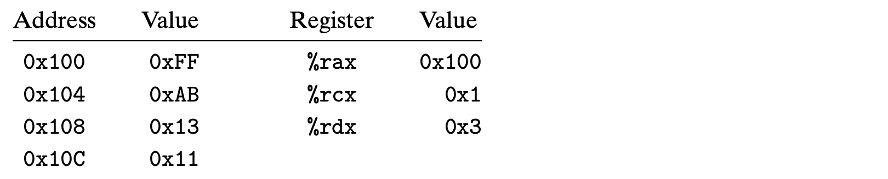
那么以下操作数存储的值分别为：
%rax：0x1000x104：地址为 0x104，值为 0xAB$0x108：0x108（立即数）(%rax)：地址为 0x100，值为 0xFF9(%rax,%rdx)：地址为 9 + 0x100 + 0x3 = 0x10C，值为 0x11260(%rcx,%rdx)：260 即十六进制数 0x104，因此地址为 0x104 + 0x1 + 0x3 = 0x108，值为 0x130xFC(,%rcx,4)：地址为 0xFC + 0x1 * 4 = 0x100，值为 0xFF%rax,%rdx,4：地址为：0x100 + 0x3 * 4 = 0x10C，值为 0x11
数据移动指令¶
在所有机器指令中使用最为频繁的便是数据移动指令，它们负责将数据从一处移动到另一处。我们将操作相同但操作数尺寸不同的指令划分为同一个指令类（Instruction Classes），下表列出的便是 MOV 指令类中的各种操作：
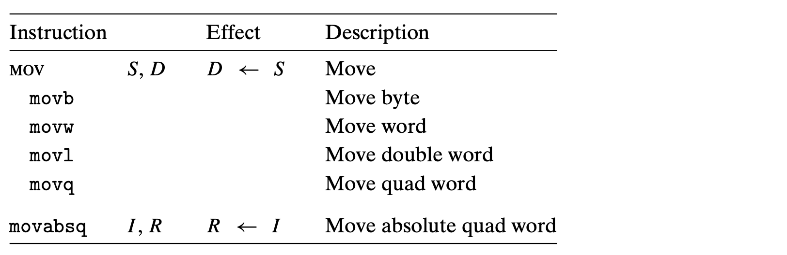
上表中的 S 代表 源地址（Source），D 代表目的地址（Destination），I 代表立即数，R 代表寄存器。其中，移动指令不能将一个位于内存中的数据直接移动到内存中的另一个位置，必须经过一个寄存器中转。此外，当movl指令的目的地址为一个寄存器时，它不仅会把目的寄存器的较低四位更新为源数据，还会将较高四位的字节全部置 0。最后，movabsq指令只能将寄存器作为数据的目的地址。下面的例子中，左边为顺序执行的移动指令，右边为寄存器 %rax 中字节的变化情况：
还有两类数据移动指令可以将较小尺寸的源数据移动到较大尺寸的目的寄存器，如下表所示：
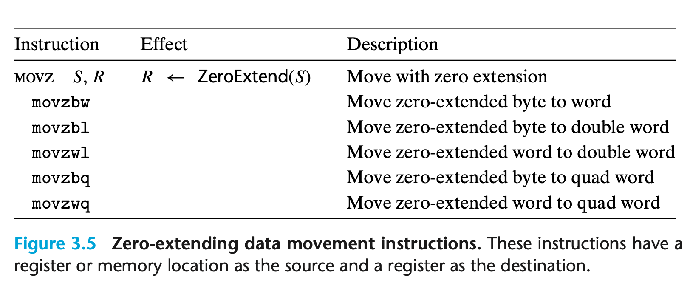
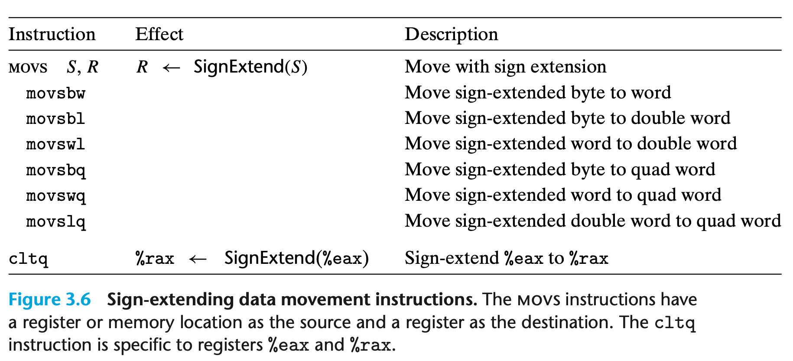
两者不同的是，movz指令将目的寄存器的剩余字节均填充为 0（零扩展），movs指令则将其填充为源操作数的最高有效位（符号扩展）。相比于符号扩展，零扩展缺少了指令movzlq。这是因为上文提到，使用movl指令移动数据到寄存器时，会将高位全部置为 0，其效果与零扩展无异。另外，符号扩展还多了一个指令cltq。它没有操作数，实际上等效于movslq %eax, %rax。
在 C 中，对指针解引用（Dereference Pointer，*p）会将指针拷贝到寄存器中，然后将该寄存器作为内存地址的引用。一个简单的 C 程序如下：
与之等效的汇编代码为：
最后两个数据移动指令分别是将数据压入程序栈（Stack）的push和将数据从程序栈中弹出的pop，如下表所示：
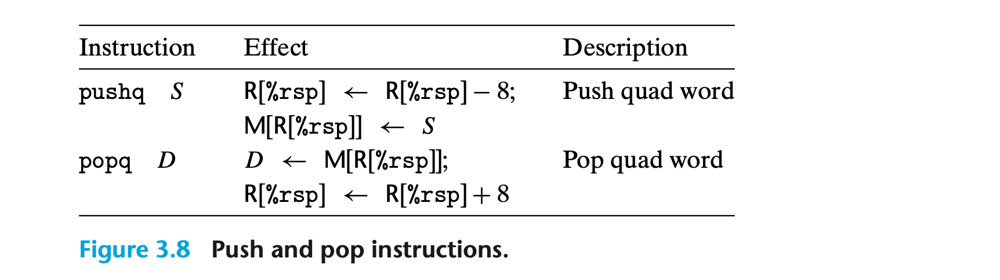
在 x86-64 中，程序栈存储在内存中的某些区域中，其特性为后进先出（Last-in, First-out）。习惯上我们将栈顶画在底端，而栈顶元素的地址（由栈指针 %rsp 保存）是整个栈中最小的：
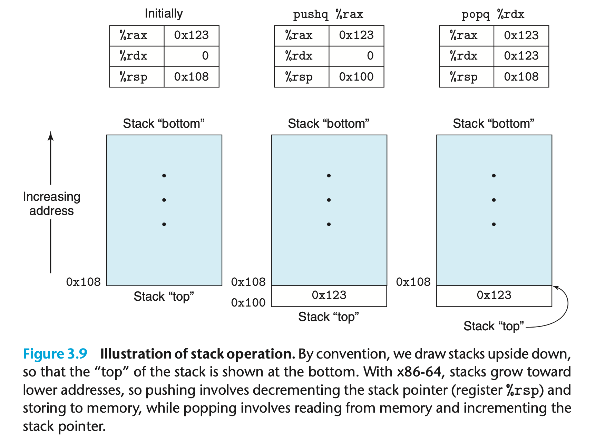
如上图所示，想要将一个四字数据压入栈中，首先要把栈指针减 8，然后令源数据值成为新的栈顶元素。因此指令pushq %rax就等效于：
同样，若想将栈顶的四字数据弹出栈，首先要把栈顶元素的值拷贝到寄存器中，然后再把栈指针加 8。因此指令popq %rdx就等效于：
算术和逻辑操作¶
下图列出了一些 x86-64 中的整数算术和逻辑操作，其中除了leaq外给出的都是指令类：
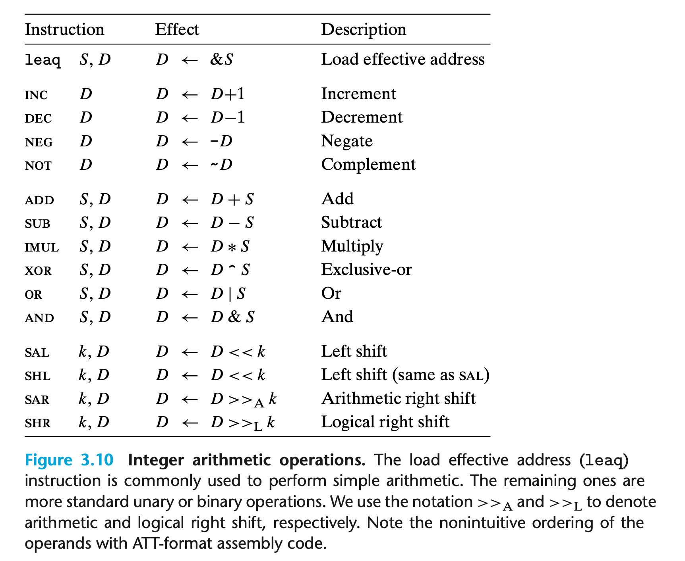
以上操作可分为四类：加载有效地址（Load Effective Address）、一元（Unary）、二元（Binary）和移位（Shifts）。一元操作只有一个操作数，而二元操作则有两个。接下来我们将分别介绍它们。
加载有效地址¶
加载有效地址的指令名为leaq，其实质是movq指令的一种变体。它会从内存中读取源操作数的地址拷贝到寄存器中，有时候也用于实现一些简单的运算。例如寄存器 %rdx 中存储的值为 x，那么指令leaq 7(%rdx, %rdx, 4), %rax的作用便是将寄存器 %rax 的值设为 5x+7。虽然leaq指令在执行运算方面的能力是有限的，但是与加法和乘法指令相比，它的性能更加出色。
一元和二元操作¶
一元操作只有一个操作数，因此源地址和目的地址相同。如操作incq (%rsp)可以将程序栈顶增加 8 个字节的元素，类似于 C 中的自增运算符++。
二元操作类似于 C 中的赋值运算符（Assignment Operator），如x -= y。举例来说，操作subq %rax, %rdx会将寄存器 %rdx 中的值减去寄存器 %rax 中的值。第一个操作数可以是立即数、寄存器或内存中的位置，第二个操作数则只能是寄存器或内存中的位置。与 MOV 类指令相同，二元操作的两个操作数不能同时为内存中的位置。
移位操作¶
移位操作的第一个操作符为位数，可以是立即数，也可以是单字节的寄存器（通常使用寄存器 %cl）。第二个操作数为移位的值。可以是寄存器或内存中的位置。对于右移运算来说，SAR 代表算术右移，SHR 则代表逻辑右移。
特殊算数操作¶
两个 64 位整型的积需要用 128 位来表示，因此 Intel 引入了 16 字节单位“八字”（Oct Word）来解决这一问题。下表展示了一些支持运算结果为八字的操作：
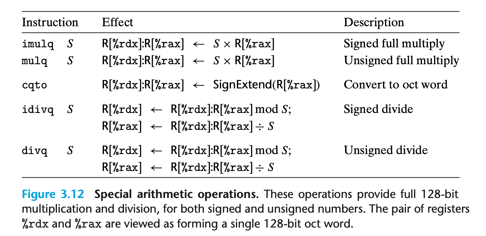
我们在普通算数操作和特殊算数操作中均发现了imulq指令。第一种属于 IMUL 类，有两个操作数。其计算结果为 64 位（若超过 64 位，则截断高位），等效于第二章介绍的 无符号乘法 和 二进制补码乘法 。第二种即是上表中的特殊算数操作，只有一个操作数，因此编译器可以根据操作数的数量区分它们。
用于有符号乘法的操作被称为imulq，用于无符号乘法的则为mulq。两者的第一个参数为寄存器 %rax，第二个参数为源操作数。计算结果中较高 64 位将存储在寄存器 %rdx 中，较低 64 位则存储在寄存器 %rax 中。
示例 C 程序在小端法机器上可转化为如下的汇编代码：
普通算数操作中没有提供除法或余数运算，因此需要使用特殊算数操作idivq和divq。与乘法类似，被除数的较高 64 位将存储在寄存器 %rdx 中，较低 64 位存储在寄存器 %rax 中。除数为操作数，商保存在寄存器 %rax 中，余数则保存在寄存器 %rdx 中。如果被除数只有 64 位，那么就应当将寄存器 %rdx 全部置为 0（无符号运算）或符号位（有符号运算）。后者可以使用cqto操作实现，它会从寄存器 %rax 中读取符号位，然后将其拷贝到寄存器 %rdx 内的每一位中。
控制¶
上文中介绍的操作只考虑了顺序执行的代码，对于 C 中的 If、For、While 和 Switch 语句，它们还需要根据数据检验的结果来决定代码执行的顺序。机器级代码提供了两种基本机制来实现这种条件行为（Conditional Behavior），一种根据检验结果改变控制流（Control Flow），另一种则改变数据流（Data Flow）。
条件码¶
上文提到，CPU 维护了一组单字节的条件码寄存器，它们记录了最近一次算数或逻辑操作结果的某些属性：
- CF（Carry Flag）：进位标识，记录最高有效位是否发生进位，用于检测无符号数操作的溢出；
- ZF（Zero Flag）：零标识，记录结果是否为 0；
- SF（Sign Flag）：符号标识，记录结果是否为负值；
- OF（Overflow Flag）：溢出标识，记录是否发生二进制补码溢出。
下列两个指令类可以在不改变任何其他寄存器的情况下设置条件码，如指令testq %rax, %rax可以检测寄存器 %rax 存储的值是正数、负数还是零：
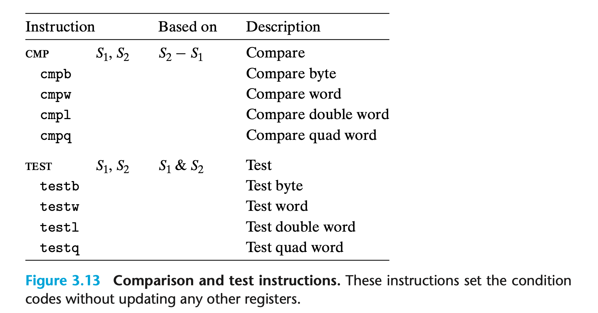
相比于直接读取，我们更常用以下三种方式使用条件码：
- 根据条件码的组合将单个字节设置为 0 或 1；
- 有条件地跳转到程序的其他部分；
- 有条件地传输数据。
下列操作指令便可以实现上述第一种方式。注意，此处的指令后缀代表的并非是不同的操作数大小，而是不同的条件判断。如指令setl和setb分别代表 set less 和 set below：
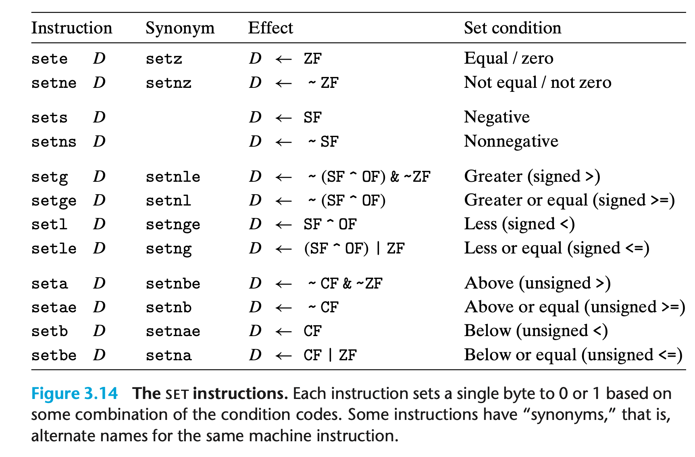
如下汇编代码首先比较了变量a和b的大小，然后根据结果把寄存器 %eax 的最低字节（即寄存器 %al）置为 0 或 1。movzbl指令的作用是将寄存器 %eax 的高位三个字节以及寄存器 %rax 的高位四个字节全部清零：
跳转指令¶
跳转指令可以让程序转到一个全新的位置继续执行，该位置在汇编代码中使用标签（Label）来指定。
示例 C 程序中，指令jmp .L1将使程序跳过movq指令，开始执行popq操作。 下图展示了不同的跳转指令：
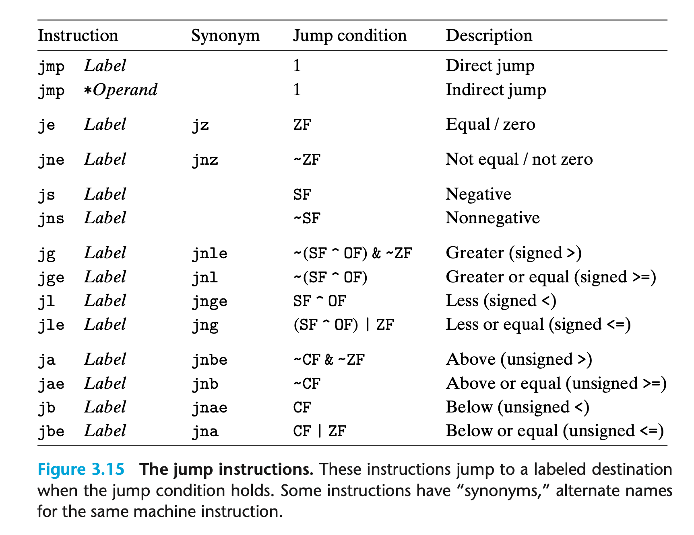
jmp指令既可以是直接跳转，也可以是间接跳转。直接跳转的目标使用标签指定，而间接跳转的目标则需要从寄存器或内存中读取。上图中的其余指令均为条件跳转，它们根据条件判断的结果来决定是否执行跳转操作。注意，条件跳转均为直接跳转。
在生成机器代码的过程中，汇编器和链接器会确定跳转目标（即目标指令的地址），并编码为跳转指令的一部分。其使用的编码方式有多种，但大多数与程序计数器相关，即比较目标指令的地址和紧挨着跳转指令的下一条指令的地址之间的差异。这样的说法有些绕口，我们以一个简单的例子来说明：
该汇编代码包含了两个跳转指令，第一个跳转到了更高的地址处，第二个则相反。而下图是对上述代码汇编然后再进行反汇编后的结果：
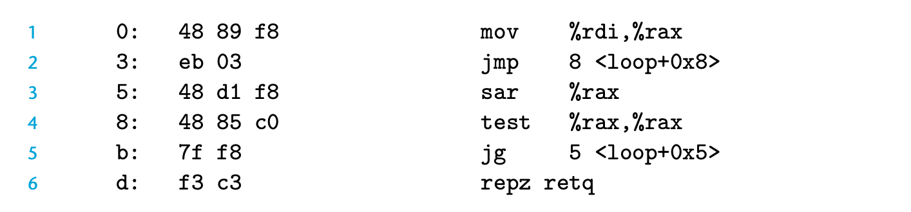
在右侧注释中，第一个跳转指令为 +0x8，第二个跳转指令为 +0x5。再看左侧指令的字节编码，第一个指令的目标被编码为 0x03，将其加上下一条指令的地址 0x5，就得到了跳转目标指令的地址，即第四行指令的地址 0x8。同样，第二个指令的目标是使用单字节二进制补码表示的 0xf8（即十进制数 -8），将其加上下一条指令的地址 0xd，就得到了第三行指令的地址 0x5。
当目标代码文件经过链接器处理后，这些指令会被重新分配地址。不过第二行和第五行跳转目标的编码依然不变，这种方式能够让指令编码更加紧凑：
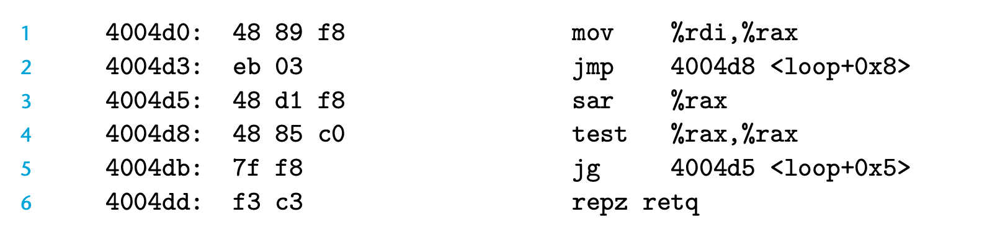
使用条件控制实现条件分支¶
若想将 C 中的条件表达式转化为机器代码，通常使用条件跳转和无条件跳转的组合。一个简单的 C 程序及其编译得到的汇编代码分别如下：
实际上该汇编代码的控制流（Control Flow）更像是使用 Goto 语句将示例 C 程序改写后得到的结果，即先比较两数大小，然后根据结果决定是否跳转：
让我们推广到一般情况。假设 C 中的 If-else 语句模板为：
那么编译生成的汇编代码的控制流便可以用如下 C 程序描述：
使用条件移动实现条件分支¶
使用条件控制实现条件分支虽然简单有效，但在现代处理器上使用可能十分低效，我们更倾向于使用一些简单的条件移动指令。上一节中的 C 程序可以改写为：
这段代码首先计算y-x和x-y，分别命名为变量rval和变量eval。然后测试x是否大于或等于y，如果是，则在返回rval之前将eval赋值给rval。编译器可以参考这种控制流生成汇编代码：
上述代码中的comovge就是一个条件移动指令，只有cmpq指令判断一个值大于或等于（如后缀 ge 所示）另一个值时，它才会将数据从源寄存器传输到目标寄存器。
我们必须了解现代处理器的运行方式，才能明白为什么基于条件移动的代码效率胜过条件控制。一条指令需要处理器通过一系列的步骤进行处理，每个步骤只执行所该指令的一小部分（例如，从内存中获取指令，确定指令类型、从内存读取、执行算术运算、写入内存和更新程序计数器等）。为了实现高性能，这条流水线（Pipelining）需要将指令的步骤重叠。例如，在执行前一条指令的算术运算的同时提取下一条指令。想要做到这一点，处理器需要能够提前确定即将执行的指令序列，以保证流水线上充满指令。
当处理器遇到条件跳转（即分支）时，它将采用复杂的逻辑来预测跳转指令是否触发。如果预测结果足够可靠（现代微处理器试图达到 90% 的成功率），流水线就可以保持指令充满。但是，错误的预测将导致处理器不得不丢弃它在未来指令上已经完成的大部分工作，使程序性能严重下降。
示例代码中x >= y的判断结果显然是难以预测的，这种情况下使用条件控制代码的效率很低。而条件移动代码先计算出所有可能的结果，再根据条件判断决定返回值。这样控制流便不再依赖数据，处理器也就更容易保持其流水线的完整性，从而提升执行效率。全部的条件移动指令如下：
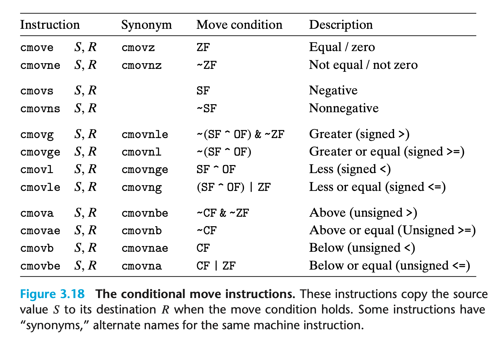
编译器可以从目标寄存器的名称推断条件移动指令的操作数长度，因此相同的指令名称可用于不同的操作数长度。我们同样把条件分支推广到一般情况，使用 C 程序来描述条件移动的控制流：
当然，使用条件移动来实现条件分支是也有一些缺点的。因为无论判断结果如何，我们都会全部执行 then-expr 和 else-expr。一旦某一个分支中的指令发生错误，将影响整个程序的可用性。另外，如果 then-expr 或 else-expr 需要大量计算，而对应的条件又不成立时，处理器所做的工作就完全白费了。不过总体来说，条件移动的性能还是高于条件控制的，这也是 GCC 编译器使用它的原因。
循环¶
Do-While¶
假设 C 中的 Do-While 语句模板为：
我们可以将其转化为 Goto 语句和 If-else 语句的组合：
实际上汇编代码正是用这种方式来实现 Do-While 语句的控制流 。示例函数fact_do及其编译得到的汇编代码分别如下：
While¶
假设 C 中的 While 语句模板为：
我们有两种方法将其转化为 Goto 语句和 If-else 语句的组合。第一种被称为 Jump-to-Middle，通过一个非条件跳转在循环的结束执行条件判断：
当 GCC 的优化参数指定为-Og时，汇编代码就会用这种方法来实现 While 语句的控制流 。示例函数fact_while及其编译得到的汇编代码分别如下：
第二种方法被称为 Guarded-Do，即首先将代码转化为 Do-While 循环，如果条件判断失败则通过条件移动指令跳过循环：
当 GCC 的优化参数指定为更高级别的-O1时，汇编代码就会用这种方法来实现 While 语句的控制流 。上面提到的函数fact_while使用 Guarded-Do 编译得到的汇编代码如下：
For¶
假设 C 中的 For 语句模板为：
显然可以将其转化为等效的 While 语句：
因此，我们依然可以使用两种方法来将其转化为 Goto 语句和 If-else 语句的组合。
Jump-to-Middle：
Guarded-Do：
同样地，编译器会根据给定的优化参数使用对应的控制流来生成汇编代码。
Switch¶
GCC 会根据 Switch 语句中 Case 的数量和 Case 值的稀疏性（Sparsity）决定编译方法。当存在多种 Case（例如四个或更多），且它们跨越的值范围较小时会使用一种名为跳转表（Jump Table）的数据结构来实现。跳转表是一个数组，数组元素分别是 Switch 语句中每个 Case 对应的代码块地址。
一个简单的 C 程序及其通过 GCC 编译后得到的汇编代码分别如下：
为了便于理解，我们用 C 来描述其实现（运算符&&会为代码块的位置创建指针）：
其中的goto *jt[index]就相当于汇编代码中第五行的jmp *.L4(,%rsi,8)。它是一个间接跳转指令，其操作数.L4(,%rsi,8)指定了由寄存器 %rsi 索引的内存地址（我们将在后续章节讨论数组是如何转化为机器代码的）。
在汇编代码中，跳转表将被表示为：
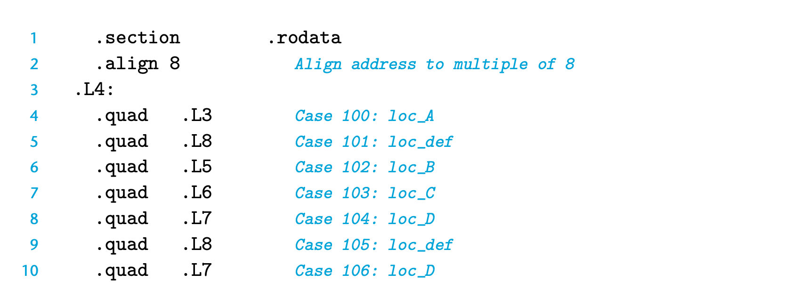
在名为.rodata的只读目标代码段中，包含了由七个quad（八字节）组成的序列，每个quad的值为汇编代码标签（如.L3）所对应的指令地址。
过程¶
过程（Procedure）在不同的编程语言中有不同的叫法，如函数（Function）、方法（Method）、子程序（Subroutine）和处理器（Handler）等，不过它们都提供了一种打包代码的方法。该代码使用一组参数和可选的返回值来实现某些功能，并可以在程序的不同位置调用。
假设过程 P 调用了过程 Q，Q 执行完毕后返回 P。那么：
- 传递控制：在调用 Q 时程序计数器必须设置为其代码地址，同时在返回 P 时也要置为 P 的代码地址；
- 传递参数：P 必须能向 Q 提供一个或多个参数，反之 Q 必须能将值返回给 P；
- 分配和释放内存：在调用 Q 之前可能需要为其局部变量分配内存空间，并在返回时释放。
运行时栈¶
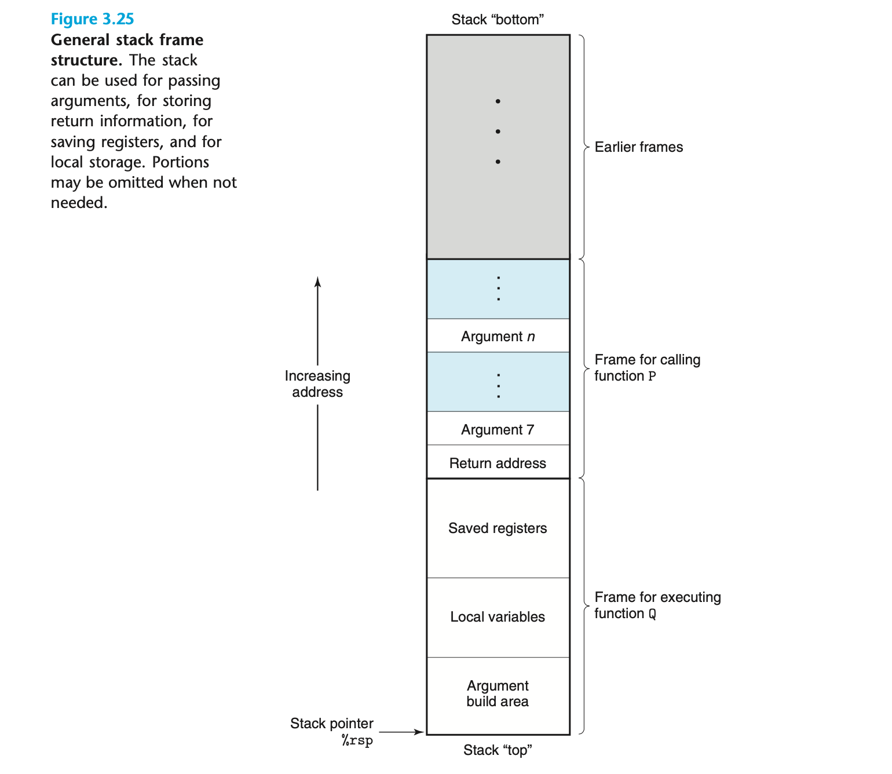
当过程所需的存储空间超过寄存器所能容纳的范围时，它便会在运行时栈上分配空间。上图为运行时栈的一般结构，主要由执行过程 Q 和调用过程 P 所需的帧（Frame）组成。每个过程可以在其栈帧内保存寄存器的值（图中的“Saved Registers”），为局部变量分配空间（图中的“Local Variables”），以及为其调用的过程设置参数（图中的“Argument”）等。当 P 调用 Q 时，它会将返回地址（图中“Return Address”）压入栈中。这样当 Q 返回时，程序便知道应该在哪里恢复执行 P。
不过出于对时间和空间效率的考虑，程序只会为过程分配它们必须的栈帧。例如某个过程的参数不足 6 个，那么它们将全部存储在寄存器中而非运行时栈（图中的参数区是从 Argument 7 开始的）。许多过程的局部变量很少且不调用其他过程，那么就不需要运行时栈。
接下来我们会对运行时栈中的各个区域进行更为深入地讨论。
传递控制¶
在汇编代码中，过程间调用是通过指令call和ret来实现的。其中，指令call Q会将程序计数器设置为过程 Q 代码的起始地址，并将返回地址 A 压入栈中。指令ret则会将地址 A 从栈中弹出，然后将程序计数器设置为 A。实际上，地址 A 就是紧跟在call指令之后的指令的地址。
下图说明了前文代码示例中主函数调用multstore后返回的过程中运行时栈的变化情况：
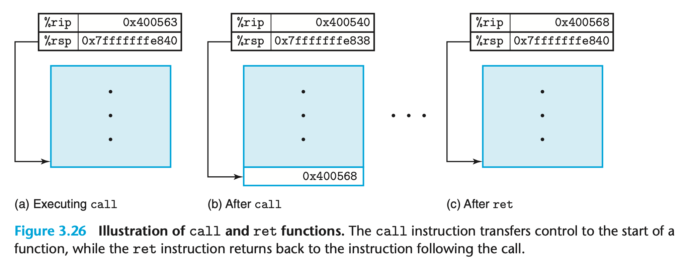
其对应的反汇编代码如下：
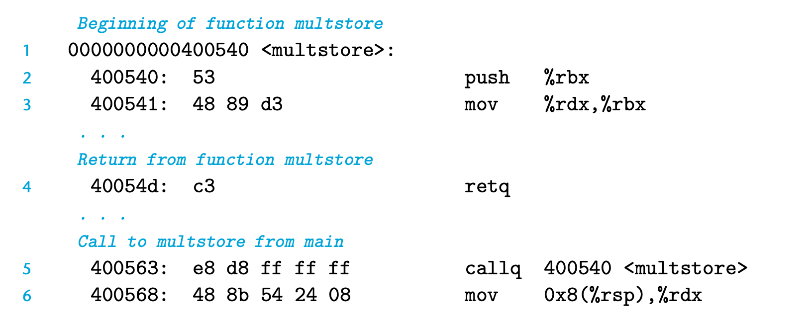
当主函数调用函数multstore时，程序计数器 %rip 中的值为call指令的地址 0x400563。该指令将返回地址 0x400568 压入栈中并跳转到函数multstore中的第一条指令，其地址为 0x0400540。 随后函数multstore继续执行，直到遇到地址 0x40054d 处的ret指令。 该指令将返回地址 0x400568 从栈中弹出并跳转到该地址对应的指令，主函数得以继续执行。
传递参数¶
在 x86-64 机器上，最多可以通过寄存器传递六个参数：
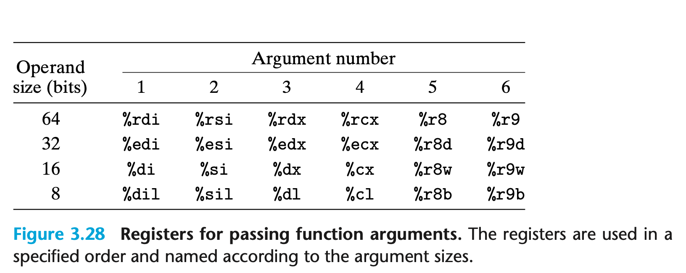
第七个及之后的参数将存储在运行时栈中。一个简单的 C 程序及其通过 GCC 编译后得到的汇编代码分别如下：
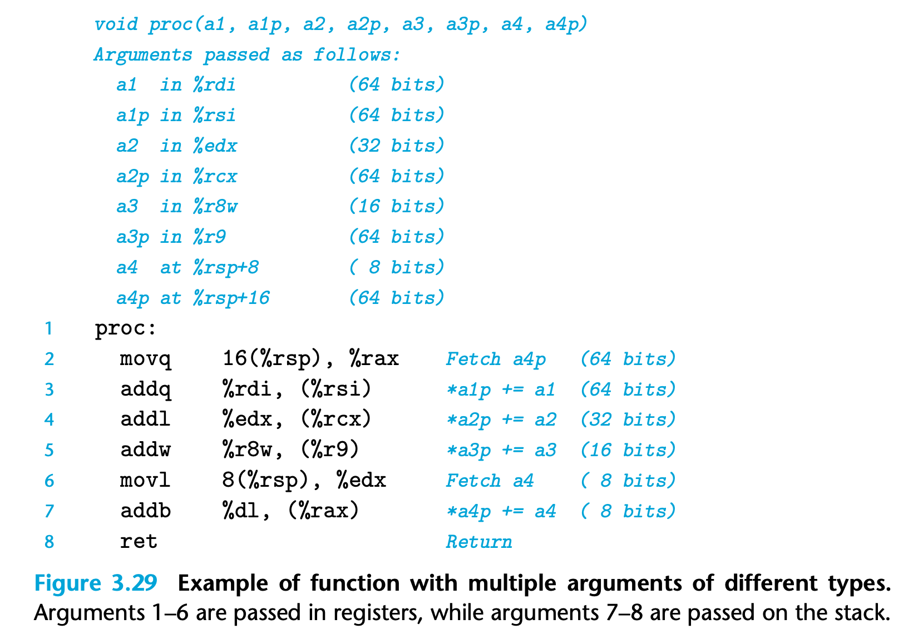
虽然参数a4的类型为char，但程序分别通过8(%rsp)和16(%rsp)来对它和指针类型的a4p进行寻址，说明两者均占用了栈中 8 个字节的空间。参数的栈帧结构如下图所示：
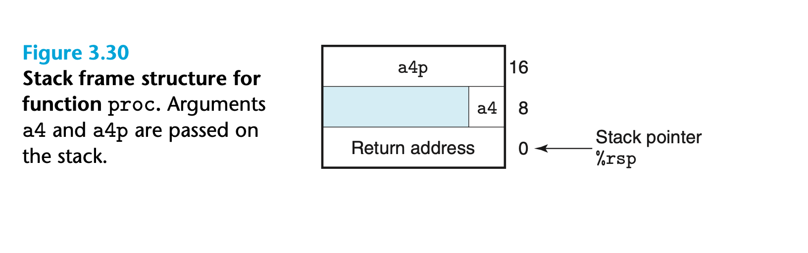
局部变量¶
某些情况下，局部变量必须存储在运行时栈中：
- 没有足够的寄存器来存储局部变量；
- 程序需要对局部变量进行取地址（
&）操作； - 局部变量的类型为数组或结构体（我们将在后续的章节中讨论这种情况）。
示例函数call_proc的代码如下，其中调用的函数proc在上一节中已有介绍：
该 C 程序生成的汇编代码十分冗长，但值得我们认真阅读和研究：
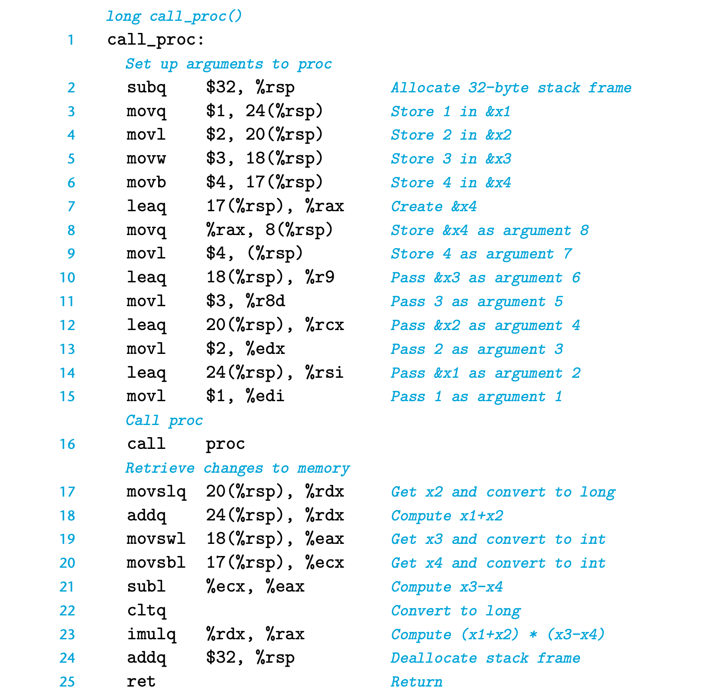
图中“Set up arguments to proc”阶段对应的栈帧结构如下图所示：
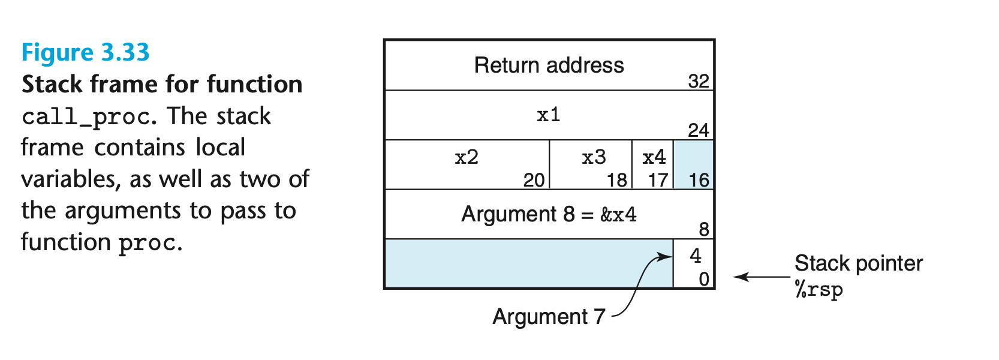
我们可以看到，局部变量x1到x4存储在栈中且有着不同的大小，分别占用字节 24-31、20-23、18-19 和 17。指向这些参数的指针均通过指令leaq生成，分别对应汇编代码中的第 7、10、12 和 14 行。前六个参数通过寄存器传递，而第七个和第八个参数则存储在栈中，相对于栈指针 %rsp 的偏移量为 0 和 8。
当程序执行到“Call proc”阶段时，由于调用了函数proc，因此返回地址需要被压入到栈顶。此时的栈帧结构和上一节展示的相同，第七个参数和第八个参数相对于栈指针 %rsp 的偏移量分别变为了 8 和 16。
被保存的寄存器¶
当一个过程（调用者）在调用另一个过程（被调用者）时，我们必须保证被调用者的执行不会影响到调用者后续计划使用的寄存器值。因此，x86-64 规定寄存器 %rbx、%rbp 和 %r12–%r15 为被调用者保存（Callee-saved）寄存器。被调用者通过将上述寄存器中的值压入栈中，然后在返回时将原始值弹出以实现调用前后寄存器的值不变。除栈指针 %rsp 以外的其他寄存器则为调用者保存（Caller-saved）寄存器，由于被调用者可以随意修改其中的值，因此调用者有责任保存调用之前的数据。
递归¶
x86-64 允许过程以递归（Recursive）的方式调用自身，这是因为每个过程在运行时栈上的空间是私有的，因此多个未完成调用的局部变量不会互相干扰。递归调用实质上和调用一个其他过程没有区别。
数组¶
对于长度为 L 的数据类型 T 和整型常量 N，声明T A[N]代表：
- 内存中将为其分配 L * N 大小的空间；
- 数组名称 A 为指向数组头部（设为\(x_A\)）的指针，任意数组元素 i 的地址为 \(x_A\) + L * i。
在 x86-64 中，内存引用指令的设计旨在简化对数组元素的访问。例如int类型的数组E[i]，E的地址存储在寄存器 %rdx 中，i 则存储在寄存器 %rcx 中。那么我们就可以通过指令movl(%rdx, %rcx, 4), %eax来将目标数组元素拷贝到寄存器 %eax 中。
C 允许我们对指针进行计算。假设指针p指向一个长度为 L、数据类型为 T 的数组且其值为 \(x_p\)，则表达式p + i的值为 \(x_p\) + L * i。进一步地，任意数组元素A[i]就等效于表达式*(A + i)。
还是以数组E[i]为例，一些指针算数表达式的结果和对应的汇编指令如下：
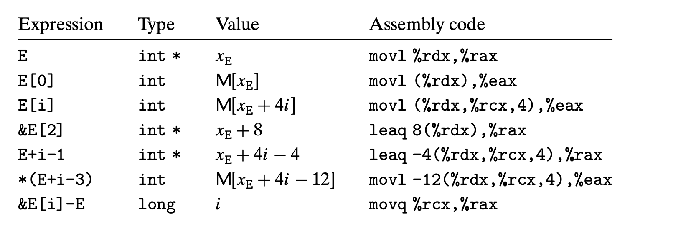
最后一个例子表明，我们可以计算同一数据结构中两个指针的差值。其结果的数据类型为long， 值为两个地址的差值除以数据类型的长度。
多维数组¶
多维数组可以转化为一般数组的形式，例如声明int A[5][3]就等效为：
数据类型row3_t是一个包含三个整型的数组，而数组A则包含五个这样的元素。我们将其推广到一般情况，若一个数组声明为T D[R][C]，则数组元素D[i][j]在内存中的地址为：
其中，\(x_D\) 为数组地址，L 为数组元素的长度。
一个 5 X 3 的整型数组A，其任意数组元素 A[i][j] 的地址用汇编代码的表示结果为：
定长数组¶
编译器可以对一些操作定长多维数组的代码进行优化。例如示例 C 程序执行矩阵运算：
它可以被优化为下列代码：
比较两者我们可以发现，优化代码没有使用索引 j，并将所有的数组引用都转换为了指针引用。其中，Aptr指向矩阵 A 中第 i 行中的连续元素，Bptr指向矩阵 B 中第 k 列 中的连续元素。Bend则指向矩阵 B 中第 k 列中的第 N + 1 个元素，它就等于循环结束时Bptr的值。
变长数组¶
C 只支持可以在编译时确定长度的多维数组(一维可能除外），声明可变大小的数组时必须使用malloc或calloc等函数来分配数组的存储空间，并且需要通过行主索引（Row-major Indexing）将多维数组的映射显式地编码为一维数组（就像 公式 3.1 做的那样）。
我们可以编写一个函数来访问 n × n 数组的元素A[i][j]，如下所示：
参数n必须在参数A[n][n]之前，这样函数在处理数组时才能够明确其维度。该程序经 GCC 编译得到的汇编代码如下：
数组元素A[i][j]地址的计算方式与定长多维数组类似，即 \(x_A + 4(n \* i) + 4j = x_A + 4(n \* i + j)\)。区别之处在于：
- 由于添加了变量
n，寄存器的使用方式不同； - 使用了乘法指令
imulq而不是leaq来计算n * i，因此程序的性能将会下降。
无论数组的长度是否为常量，编译器都会对操作多维数组的代码进行一定优化。虽然二者实现的细节有所差异，但其宗旨是一致的：避免直接使用 公式 3.1 而导致的乘法运算。
异构数据结构¶
结构体¶
结构体（Structure）的每个部分都存储在连续的内存空间中，指向结构体的指针是其第一个字节的地址。一个简单的结构体声明如下：
该结构体包含了四个字段：两个四字节的int变量，一个两元素的int型数组和一个八字节的int型指针，共占用 24 字节的内存空间：
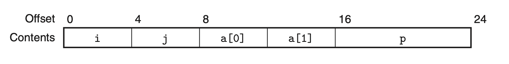
汇编代码可以通过在结构体地址上添加适当的偏移量来访问结构体中的任意字段。假设structure rec *类型的变量r存储在寄存器 %rdi 中，那么下列代码将元素r -> i，即(*r).i，拷贝到r -> j：
同样，如果我们要获取结构体中数组元素rec.a[i]的地址&(r -> a[i])，只需：
如上述汇编代码所示，程序对结构体字段的选择是在编译时完成的，因此机器代码中不含有任何有关字段声明或字段名称的信息。
联合体¶
联合体（Unions）的声明和语法与结构体相同，但其不同字段均引用相同的内存空间。例如一个结构体和一个联合体的声明如下：
那么S3和U3各个字段的偏移量和总数据长度为：
| Type | c | i | v | Size |
|---|---|---|---|---|
| S3 | 0 | 4 | 16 | 24 |
| U3 | 0 | 0 | 0 | 8 |
对于类型为union U3 *的指针p，表达式p -> c，p -> i[0]和p -> v都将引用联合体的起始地址。联合体的长度等于其所有字段中最大的数据长度，而结构体则等于其所有字段长度的和。我们将在下一节 数据对齐 中介绍为什么i在S3中的偏移量是 4 而不是 1，以及v的偏移量是 16，而不是 9 或 12。
如果一个数据结构中的两个字段是互斥（Mutually Exclusive）的，我们就可以使用联合体来减少空间浪费。假如存在一个二叉树，其每个叶节点（Leaf node）都有两个双精度浮点值，每个内部节点（Internal node）都有两个指向子节点的指针。那么使用结构体实现该数据结构的代码为：
这样每个节点都需要占用 32 字节的空间，其中只有一半会被节点真正使用。而如果我们使用联合体来实现：
则每个节点就只需占用 16 个字节的空间。对于类型为union node_u *的指针n，叶节点可以用n -> data[0]和n -> data[1]来表示，而内部节点指向的子节点可以用n -> internal.left和n -> internal.right来表示。
联合体还可用于访问不同数据类型的位模式。假设我们需要将一个double类型的变量强制转换为unsigned long，则可以用以下方法实现：
该代码将两种数据类型均存储在联合体temp中，使其有着相同的位级表达，从而实现了类型转换。
数据对齐¶
许多计算机系统要求程序对象的地址必须是某个值（通常为 2，4 或 8）的倍数，其目的是简化处理器和内存系统之间的硬件接口设计。假设一个处理器每次都从内存中读取 8 个字节，而一个double类型的数据地址为 8 的倍数，那么它就可以被一次内存访问操作读取或写入。否则，它会被拆分为两个 8 字节的内存块，导致处理器操作次数的增加。
无论数据对齐是否实现，x86-64 的硬件都将正常工作。但是 Intel 建议对齐数据以提高内存系统性能，其规则为：任何 K 字节对象的地址必须为 K 的倍数：
| K | Types |
|---|---|
| 1 | char |
| 2 | short |
| 4 | int, float |
| 8 | long, double, char * |
编译器会在汇编代码中放置指令，指示全局数据所需的对齐方式。比如我们在介绍跳转表时，示例代码中的.align 8就代表该指令后面的数据地址均为 8 的倍数。对于涉及到结构体的代码，编译器可能还需要在字段分配空间时插入间隙以实现数据对齐。一个简单结构体的声明如下：
编译器实际为其分配的内存空间为：
即然各字段的偏移量均为 4 的倍数，那么只要起始地址也为 4 的倍数，该结构体便实现了数据对齐。
机器级代码中控制和数据的组合¶
理解指针¶
- 指针不是机器代码的一部分，而是 C 提供的一种用来帮助程序员避免寻址错误的抽象；
- 每个指针都有一个关联的类型。特殊的指针类型
void *代表通用（范型）指针，可以显式或隐式地转换为有关联类型的指针； - 每个指针都有一个值，其值为指定类型的某个对象的地址。若指针的值为
NULL(0)，则代表它没有指向任何地方； - 指针是操作符
&创建的，在机器代码中常用leaq指令实现； - 使用操作符
*来对指针解引用； - 数组和指针之间关系密切；
- 指针可以被强制类型转换，但不会改变其值；
- 指针也可以指向函数，使程序可以在其他地方调用代码，其值为函数的机器代码中第一条指令的地址。
例如一个函数的原型为：
我们可以声明一个指针来指向它：
这样便可以使用指针来调用该函数：
内存引用越界和缓冲区溢出¶
C 不会对数组引用做任何的边界检查，这可能导致存储在栈中的数据因写入越界（Out-of-Bounds）的数组元素而损坏。如果程序随后以这种状态重新加载寄存器或执行ret指令，事情可能会变得十分严重。
一种常见的状态损坏原因被称为缓存区溢出（Buffer Overflow），比较典型的例子是字符串的长度超过了栈中为其分配的字符数组空间：
上半部分代码展示了库函数gets的实现过程：它首先从标准输入中读取一行字符串，当遇到换行符或某些错误条件时停止；然后它将读取内容复制到参数s指向的位置上，并以字符NULL结尾。gets的问题在于其无法确定是否分配了足够的空间来保存读取到的字符串。而在下半部分的函数echo中，我们故意将缓冲区做得非常小（只有 8 个字节），因此任何超过 7 个字符的字符串都会导致越界写入。随着字符串长度的增加，受到影响的栈区域会越来越多：
| Character Typed | Additional Corrupted State |
|---|---|
| 0-7 | None |
| 8-23 | Unused Stack Space |
| 24-31 | Return Address |
| 32+ | Saved State in Caller |
编译器为函数echo分配了 24 个字节的空间，因此读取少于 23 个字符的内容不会发生严重后果。但一旦超出这个范围，返回指针的值和其他保存的状态就会被破坏，ret指令将导致程序跳转到一个完全不可预知的位置。
阻止缓冲区溢出攻击¶
缓冲区溢出甚至会导致计算机受到网络攻击，危害系统安全。受到攻击的程序会接受一个字符串，包含一些可执行代码的字节编码（也称漏洞利用代码），以及一些额外字节。只要额外字节能够将返回地址覆盖为指向漏洞利用代码的指针，程序执行ret指令时就会跳转到漏洞利用代码。现代编译器和操作系统已经开始引入一些机制来抵御这种攻击。
随机化栈¶
只要我们在程序开始运行时在栈上分配 0 到 n 个字节之间的随机空间（例如使用分配函数alloca），就可以让相同的代码在多次运行中使用不同的栈地址。分配的空间范围 n 需要足够大，以便栈地址能够发生足够的变化。但又要足够小，否则程序将浪费太多的内存空间。
不过攻击者可以在实际的漏洞利用代码前加入一长串的nop指令，从而暴力攻克随机化栈。因此随机化栈可以增加成功攻击系统所需的工作量，但不能提供可靠完善的保障。
栈损坏检测¶
我们还可以在局部缓冲区和栈的剩余部分之间插入一个金丝雀值（Canary）来检测栈是否损坏：
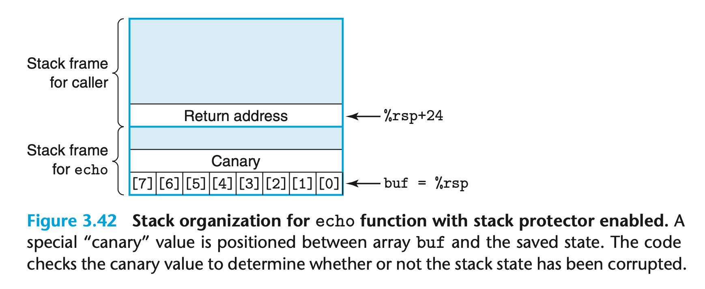
限制可执行代码区域¶
最后，我们可以限制只有保存了编译器生成的代码的那部分内存区域是可执行的，其他部分被限制为只读或只写。
支持可变大小的栈帧¶
在之前我们介绍的汇编代码中，编译器为程序分配的运行时栈大小都是确定的。而有些程序则需要大小可变的运行时栈，例如：
函数vframe声明了一个变长的指针数组*p[n]，将在栈中占用8n个字节的空间。由于n的值是由函数第一个参数给出的，因此编译器无法确定要为该函数的运行时栈分配多少空间。另外，程序涉及了对局部变量i地址的引用，所以该变量必须存储在栈中。当函数返回时，运行时栈需要被回收，栈指针将指向存储返回地址的位置。
为了管理可变大小的栈帧，x86-64 使用寄存器 %rbp 作为帧指针（又称基指针，Base Pointer）。栈帧结构如下图所示：
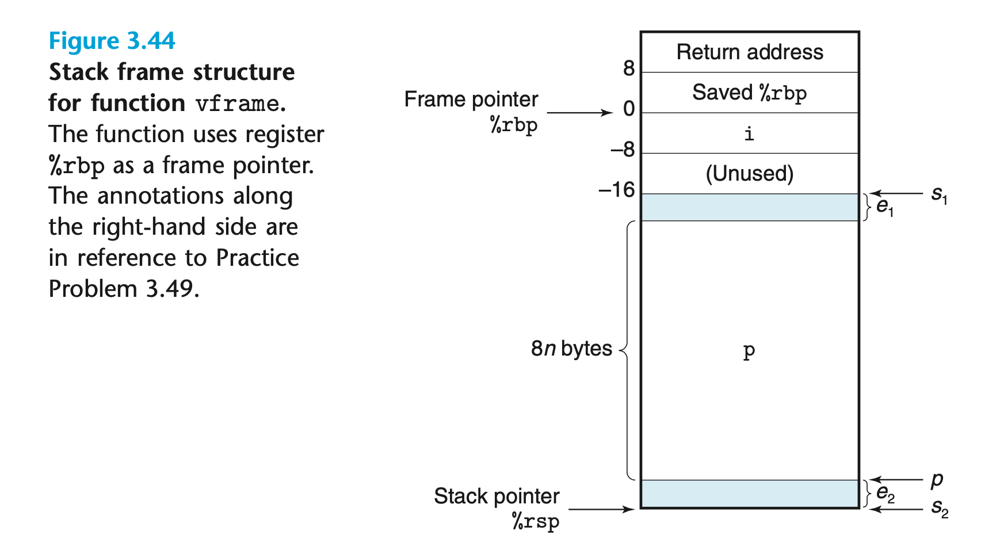
上文提到，%rbp 是一个 被调用者保存寄存器 ，因此其原值将被保存在栈中（图中的“Saved %rbp”）。在程序的执行过程中，%rbp 会一直指向这个位置。一些固定长度的局部变量，比如i，就可以根据其相对于 %rbp 的偏移量来引用。函数编译后生成的部分汇编代码如下：
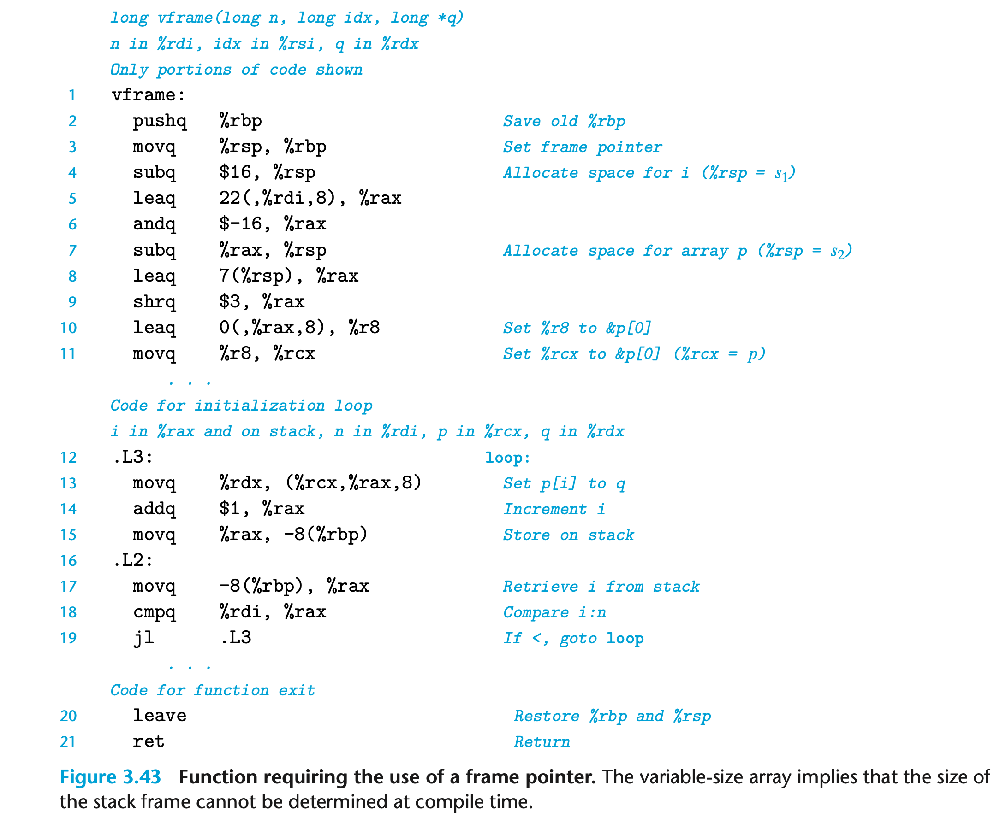
函数首先将 %rbp 压入栈中，然后将其置为当前运行时栈的地址（汇编代码第 2 到 3 行）。接下来在栈上分配了 16 个字节的空间，栈指针指向图中 s1 的位置。前 8 个字节用于存储局部变量i，后 8 个字节并未使用。然后它开始为数组*p[n]分配空间，栈指针指向图中 s2 的位置。其相对于 s1 的偏移量是通过汇编代码第 5 到 7 行计算得到的：
由于该结果是 16 的倍数，因此实现了数据对齐。汇编代码第 8 到 10 行将图中 p 的值置为最接近 s2 的 8 的倍数，最终由寄存器 %rcx 中的值作为*p[n]的起始地址。假设 n 为 5 或 6，s1 的值为 2065 或 2064，则图中各值为：
| n | s1 | s2 | p | e1 | e2 |
|---|---|---|---|---|---|
| 5 | 2065 | 2017 | 2024 | 1 | 7 |
| 6 | 2064 | 2000 | 2000 | 16 | 0 |
在函数执行结束前，汇编代码第 20 行的leave指令将帧指针恢复原值。相当于执行了以下两条指令：
浮点代码¶
处理器的浮点架构决定了操作浮点数的程序与机器级代码之间的映射方式，包括以下方面：
- 浮点数是被如何被存储和访问的；
- 操作浮点数的指令；
- 浮点数如何作为参数传递给函数以及如何作为结果返回；
- 在函数调用时如何保存寄存器中的值。
我们的内容基于 AVX2（Adcanced Vector Extensions2）扩展，可以在 GCC 编译时加入-mavx2参数以生成这种架构的代码。
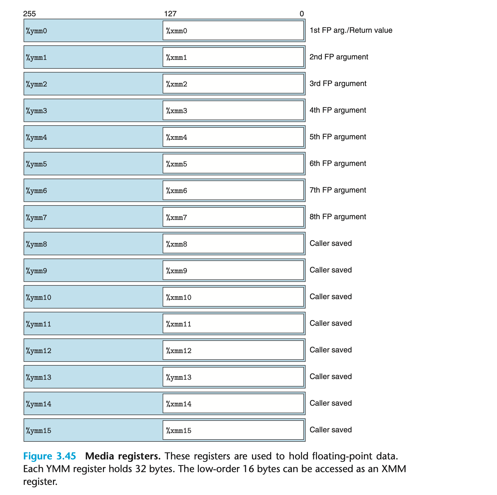
如上图所示，AVX 架构允许浮点数存储在 16 个 YMM 寄存器中，每个长度均为 256 位（32 字节）。在对标量数据进行操作时，这些寄存器只会保存浮点型数据。而对于float类型和double类型，分别只有较低的 32 位和 64 位被使用。汇编代码通过 XMM 寄存器（即图中的“%xmm0”～“%xmm15”）的名称来引用它们，每个 XMM 寄存器是其对应的 YMM 寄存器的低 128 位（16 字节）。
浮点数的移动和转换操作¶
下图展示了一组在内存和 XMM 寄存器之间和在两个 XMM 寄存器之间不进行类型转换的传输数据浮点数指令：
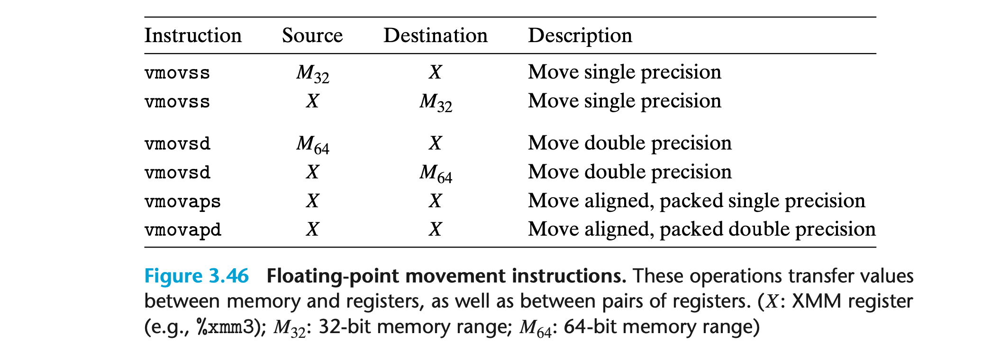
前四个指令涉及到对内存的引用，我们称其为 Scalar 指令。它们操作的对象是单独的数值，只会改变目的寄存器低位的四字节或八字节。而后两个指令则属于 Packed 指令，它们会更新目的寄存器中全部的内容。
浮点数和整型之间进行转换的操作指令为：
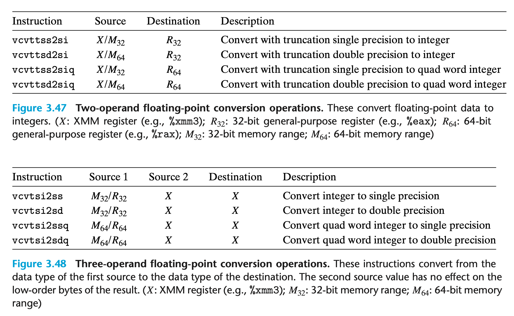
在 C 和大多数编程语言中，浮点数转换为整型时会先进行截断操作，将数值向零舍入。而整型转化为浮点数时，我们一般会忽略第二个源操作数，因为它只影响结果的高位字节。因此，通常情况下第二个源操作数和目的操作数是相同的。
最后则是两种浮点数之间的类型转换。假设寄存器 %xmm0 的低位四字节保存了一个单精度浮点值，那么我们很容易使用指令vcvtss2sd %xmm0, %xmm0, %xmm0来把它转换为双精度浮点值然后再存储于寄存器 %xmm0 的低位八字节中。然而实际上 GCC 生成的汇编代码为：
指令vunpcklps会交错两个 XMM 寄存器中的值，并将它们存储在第三个寄存器中。举例来说，如果两个源寄存器中的值分别为\([s_3, s_2, s_1, s_0]\)和\([d_3, d_2, d_1, d_0]\)，那么目标寄存器的值就是\([s_1, d_1, s_0, d_0 ]\)。在上述代码中，三个操作数使用相同的寄存器，因此如果寄存器 %xmm0 中的原始值为\([x_3, x_2, x_1, x_0]\)，则该指令将更新其值为\([x_1, x_1, x_0, x_0]\)。
指令vcvtps2pd将源 XMM 寄存器中的两个低位单精度值扩展为目的 XMM 寄存器中的两个双精度值。设 \(dx_0\) 为将 \(x_0\) 转换为双精度的结果，那么该指令将得出值\([dx_0, dx_0]\)。综上，这两条指令的最终效果是将寄存器 %xmm0 中低位四字节中的原始单精度值转换为双精度值，并将它的两个副本存储在寄存器 %xmm0 中。
同样，GCC 为双精度值转换为单精度生成类似的汇编代码：
假设寄存器 %xmm0 中包含了两个双精度值\([x_1, x_0]\)，则执行上述代码的结果为\([0.0, 0.0, x_0, x_0]\)。
过程中的浮点代码¶
观察图 3.45 中最右侧的注释，我们可以发现以下准则：
- 最多可以使用 XMM 寄存器传递八个参数（%xmm0-%xmm7），其余的则需要通过栈；
- 和 %rax 类似，%xmm0 通常作为浮点数的返回寄存器；
- 所有 XMM 寄存器均为调用者保存，被调用者可以覆盖其中任意一个；
- 当函数参数是指针、整数和浮点数的组合时，指针和整数在通用寄存器中传递，而浮点值则在 XMM 寄存器中传递。
浮点数的算数操作¶
浮点数算数操作指令如下，每个指令都有一到两个源操作数和一个目的操作数。第一个源操作数可以是 XMM 寄存器或内存中的位置，第二个源操作数和目的操作数只能是 XMM 寄存器；
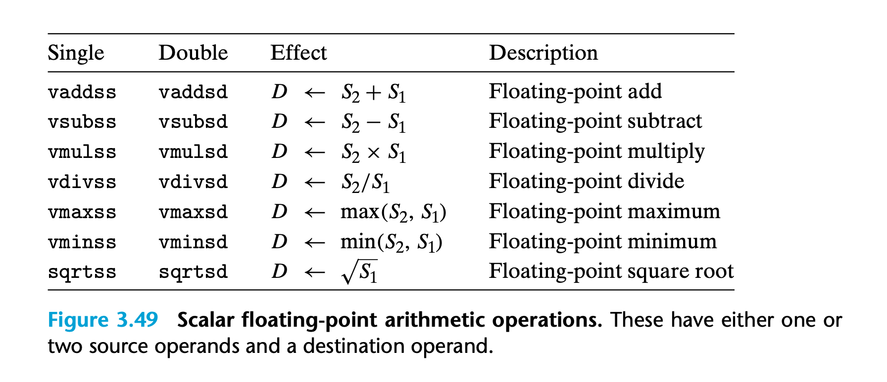
浮点常量的定义和使用¶
与整数算术运算不同，AVX 浮点运算不能将立即数作为操作数。编译器必须为常量分配和初始化存储空间，再由代码从内存中读取值。
浮点代码中的位级运算¶
下图展示了两个用于 XMM 寄存器的位级运算指令，其操作对象均为 Packed 数值（XMM 寄存器中全部的 128 位）：
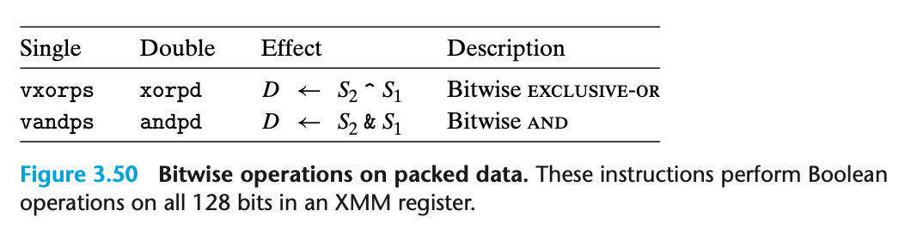
浮点数的比较操作¶
AVX 2 为浮点数值的比较运算提供两种操作指令：
| Instruction | Based on | Description |
|---|---|---|
| vucomiss \(S_1\), \(S_2\) | \(S_2 - S_1\) | Compare Single Precision |
| vucomisd \(S_1\), \(S_2\) | \(S_2 - S_1\) | Compare Double Precision |
上述指令与 条件码 中介绍的 CMP 指令类相似。参数 \(S_2\) 必须是 XMM 寄存器，而参数 \(S_1\) 则既可以是 XMM 寄存器，又可以是内存中的位置。
浮点数比较操作会改变以下条件码的值，其中 PF 意为 Parity Flag：
| Ordering \(S_2\):\(S_1\) | CF | ZF | PF |
|---|---|---|---|
| Unordered | 1 | 1 | 1 |
| \(S_2\) < \(S_1\) | 1 | 0 | 0 |
| \(S_2\) = \(S_1\) | 0 | 1 | 0 |
| \(S_2\) > \(S_1\) | 0 | 0 | 0 |
当任意操作数为 NaN 时，图中“Unordered”的情况就会出现。PF 的值将被置为 1，对应的跳转指令为jp。其余三种情况则和整型的 跳转指令 相同，分别为jb、je和ja。